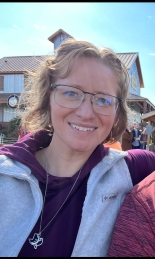

Key Research Interests: Macroevolutionary patterns of phenotypic and morphological diversity; vertebrate evolution; scaling, body size evolution, and sexual dimorphism; comparative anatomy; geometric morphometrics; phylogenetic comparative methods; and the use of 3D modeling (CT scanning and photogrammetry) to support research and undergraduate teaching.
I am a conceptual evolutionary biologist and educator interested in understanding the relationships and processes that shape the diversity of life. My research has explored miniaturization, sexual dimorphism, and morphological integration, using comparative and quantitative approaches to investigate how biological form evolves.
I earned my Ph.D. in Ecology and Evolutionary Biology from Iowa State University and currently serve as an Instructor of Biology at Des Moines Area Community College. My research background informs how I teach, bringing scientific inquiry, evidence-based reasoning, and computational exploration into undergraduate biology education.
Across my work, I am motivated by curiosity about the living world and a commitment to helping others develop the skills to investigate it, recognize connections, and evaluate scientific information critically.